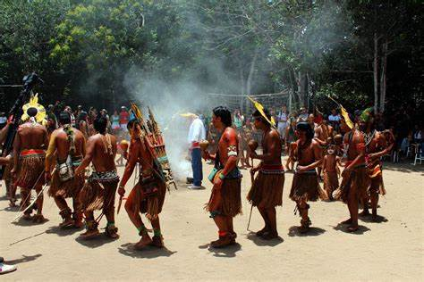

CULTURA
"A cultura indígena brasileira é vasta e diversificada, ao contrário do que pensa o senso comum. Os historiadores estimam que, no início do século XVI, havia quatro agrupamentos linguísticos principais: tupi-guarani, jê, caribe e aruaque. Essas famílias linguísticas compartilhavam o mesmo idioma e culturas semelhantes."
"Antes da colonização, os índios que habitavam o território (hoje denominado Brasil) tinham uma cultura similar em alguns pontos, tais eram: organização social baseada no coletivismo; ausência de política, Estado e governo; ausência de moeda e de trocas mercantis; religiões politeístas baseadas em elementos da natureza; e ausência da escrita." "A visão europeia sobre os povos indígenas foi, desde a colonização, etnocêntrica, a qual considera o modo de vida indígena inferior por não conter elementos considerados, pelos europeus, símbolos de civilização e progresso. No entanto, a antropologia e a sociologia contemporâneas já desmistificaram essas análises preconceituosas, estabelecendo que as diferenças culturais entre os povos não são motivos para estabelecer-se uma hierarquia cultural."
